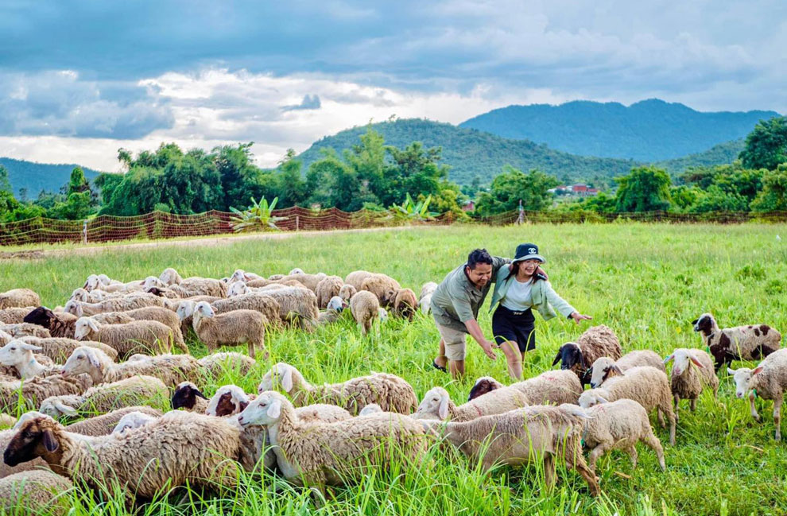

Hotline: 012 000 000 / 011 000 000
Email: kla@gmail.com


A farm is A farm is a piece of land used to grow crops and raise animals. Farms can be small or large, and can include many different types of buildings and machinery. a piece of land used to grow crops and raise animals. Farms can be small or large, and can include many different types of buildings and machinery.
Assistance with sheep breeding, health management, and overall flock maintenance, including vaccinations, shearing, and nutrition plans.

Services for shearing sheep and processing wool for sale, including cleaning, carding, and packaging for various industries or direct consumers.
Providing grazing services to maintain pastures or land, helping with weed control, soil improvement, and sustainable agricultural practicesthrough rotational grazing systems.
Decide on your purpose (wool, meat, milk, or pets).
Research local regulations and costs.
Select a breed that fits your goals (e.g., Merino for wool, Suffolk for meat).
Build a well-ventilated shelter to protect sheep from weather.
Install strong fencing to prevent escapes and keep predators out.
Allocate at least 0.5–1 acre of pasture for every 3–5 sheep.
Ensure access to fresh pasture, hay, and clean water.
Supplement diets with grain for pregnant or nursing sheep.
Offer sheep-specific mineral blocks (avoid copper-heavy mixes).
Shear wool breeds annually and trim hooves regularly.
Implement parasite control and vaccinations with a vet’s guidance.
Monitor for common health issues like foot rot, parasites, and bloat.
Breeding season typically occurs in the fall, with lambs born in spring.
Ensure proper nutrition and prepare for lambing with a clean, quiet space.
Maintain a flock of at least 2-3 sheep, as they are social animals.
Customized Tips: Get advice on starting a sheep farm.
Resources: Access guides, handouts, and learning materials.
Community Building: Connect with other farmers.
Introduction to Sheep Care: Courses cover the basics of feeding, watering, and maintaining health.
Sheep Health and Welfare: Learn about common illnesses, parasite management, and hoof trimming.
Nutrition and Grazing Management:Understand the essentials of pasture rotation and balanced diets.
Shearing and Wool Handling:Practice sheep shearing and learn how wool is processed and graded.
Lambing Assistance: Gain insights into birthing processes and how to care for newborn lambs..
Hoof Trimming and Health Checks: Get hands-on experience performing routine health tasks.
Milking: For dairy breeds, try milking sheep and processing milk into cheese or yogurt.
Customized Tips: Receive practical advice for those starting their own sheep farming journey.
Resources: Access guides, handouts, or follow-up materials from experienced instructors.
Community Building: Network with other participants and build connections with local farmers.